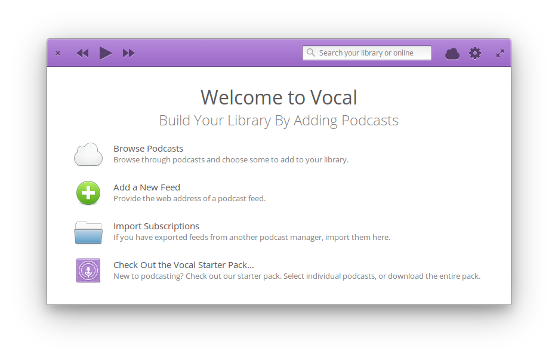

Subscribe, download, and listen to podcasts
Get elementary OS Install on AppHub Subscribe, browse, and listen to any podcast - audio or video.
Have you ever missed something and wanted to skip back 10 seconds, or jump forward 2 full minutes to breeze past an advertisement? Set custom time intervals for the skip forward and backward buttons.
Between native notifications, launcher count and progress bar support, system media keys, and sound menu integration, Vocal feels right at home in elementary OS.
Automatically create your library by importing existing libraries from iTunes, gPodder, and other podcast clients, or create a new library by adding your own feeds. Plus, should you decide to try something else, you can take all your data with you.
Stream episodes without the need for a download, or save them for offline listening or permanent archival.
Vocal automatically checks for and downloads new episodes in the background, so your library is always up-to-date.
Never worry about old downloads filling up your hard disk! Vocal periodically cleans your library so the freshest content is always available, while also keeping the cruft out.
Vocal remembers exactly where you were in each episode, so it can start back right where you left off.